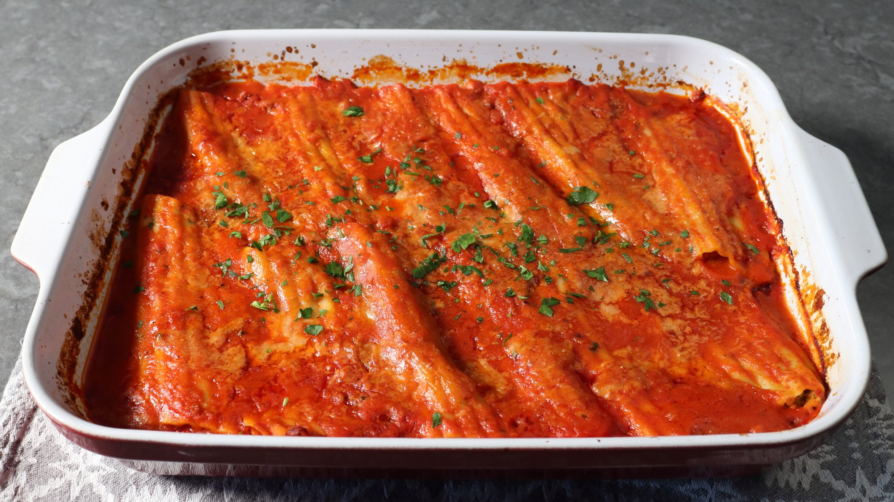

Three Cheese Brocoli Manicotti

Descriptions
Ingredients:
- 2 large heads brocoli
- 1 (8 ounce) package manicotti shells
- 2 cloves garlic, crushed
- 1 cup ricotti cheese
- 4 ounces grated provolone cheese
-
1 1/2 cups grated parmigiano-reggiano cheese, divided, or more to taste
- 2 large eg1 g, beaten
- 2 teaspoons kosher salt, or to taste
- 1 pinch cayenne pepper, or to taste
- 1 teaspoon freshly ground black pepper
- 1 pinch freshly grated nutmeg
- 3 1/2 cups prepared marinara sauce
- 2 1/2 cups water
- 6 ounces cooked, crumbled, hot italian sausage
- 1 tablespoon freshly chopped italian parsley, or to taste
Steps:
- Bring a pot of generously salted water to a boil.
-
Meanwhile, separate broccoli stems and florets. Cut florets in half and
cut each stem into several pieces lengthwise.
-
Place stems in the boiling water and cook for 3 to 4 minutes. Then add
florets and cook until just barely tender, about 3 more minutes.
-
Use a slotted spoon to transfer broccoli to a bowl of cold water,
leaving the water boiling on the stove. Let broccoli sit until cool,
about 2 minutes. Transfer to a colander and let sit until very well
drained. Leave the bowl of cold water for the pasta.
-
Meanwhile, add manicotti to the boiling water and cook, stirring
occasionally, until tender but slightly undercooked, 6 to 7 minutes. Use
a slotted spoon to gently transfer manicotti into the bowl of cold
water.
-
Chop cooled, drained broccoli into small pieces. Transfer 3 cups chopped
broccoli to a mixing bowl and reserve any extra for another use.
-
Add garlic, ricotta, provolone, 1 ¼ cups Parmigiano-Reggiano, eggs,
salt, cayenne, pepper, and nutmeg to the broccoli. Mix with a spoon
until thoroughly combined. Cover and refrigerate until needed.